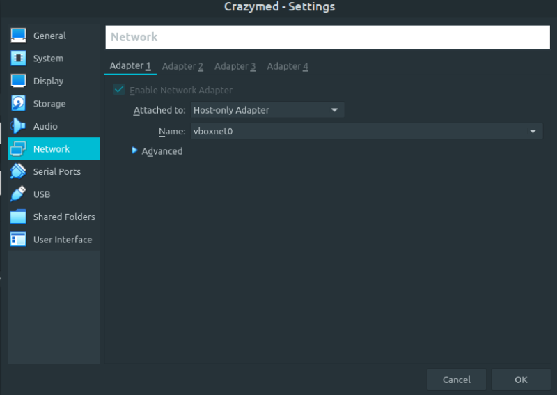
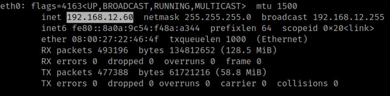
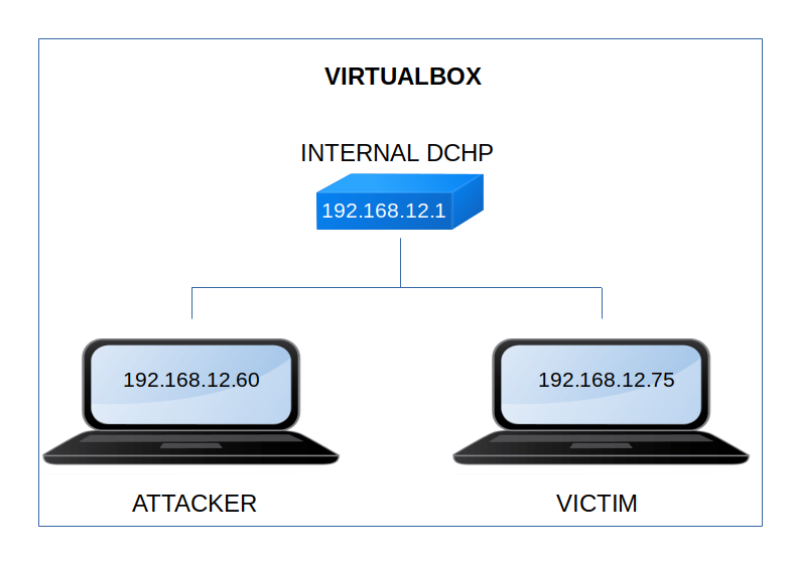

Crazymed
▸ Crazymed
▸ 2. Finding Services and Ports
▸ 4.1 Create a bash reverse shell (First flag)
Difficulty: Begginer.
Flag: 2 flags.
Learning:
• Reconnaissance
Scan Network
Find services
• Enumerate
• Exploitation
• Privilege Escalation
• Download (Mirror): https://downloads.hackmyvm.eu/crazymed.zip
Install the machine on VirtualBox:
1. Download the file and extract it.
2. On Virtualbox choose File->Import Appliance.
3. Select the file “ova”.
4. Accept to import.


Watch your Machine IP.
$ ifconfigOutput:

Diagram
